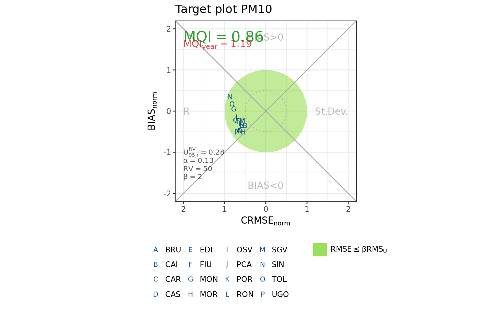

target_report: prepare input for target plot
target_plot: target plot
target_report(data, obs, mod, point, pollutant = c("NO2", "O3", "PM10", "PM2.5"), beta = 2) target_plot(t_rep)
| data | a data frame including observations and model forecasts |
|---|---|
| obs | name of the column with observed data |
| mod | name of the column with forecasts |
| point | name of the column with station ID |
| pollutant | one of |
| beta | parameter \(\beta\) (default is 2) |
| t_rep | output of |
target_report returns a list of 3:
quality_pointsa data frame with 9 variables for each station
Pointstation ID
Obs.aveannual mean of observations (paired with forecasts)
Mod.aveannual mean of forecasts (paired with observations)
rmsu\(RMS_U\) (see RMS_U_obs)
crmse_norm\(CRMSE/(\beta*RMS_U)\)
rR (see R)
crmse_ratio\(abs(NMSD)/sqrt(2*(1-R))\) as in eq.34, p.30 in Janssen et al., 2017
bias_norm\(BIAS/(\beta*RMS_U)\)
mqi_tsModel Quality Indicator \(RMSE/(\beta*RMS_U)\) (see MQI_ts_synth)
mqi_yearModel Quality Indicator for yearly averages (see MQI_year)
n_validno. of valid data
quality_overalla data frame with 3 overall indicators
mqi_ts_p9090th percentile of mqi_ts
mqi_year_p9090th percentile of mqi_year
n_pointsno. of valid stations
parametersa list of 7 parameters
target_plot returns a target plot (object of class ggplot and gg)
Janssen et al., 2017. "Guidance Document on Modelling Quality Objectives and Benchmarking. Version 2.1"
# prepare dataset require(dplyr) Mod <- dMean(mod.data %>% filter(Var=="c_PM10"), value = "Value", time = "Time", point = "Point") Obs <- obs.pm10 %>% mutate(Day=format(Time,"%Y-%m-%d"), Point=ID) Dat <- inner_join(Mod, Obs, by=c("Point", "Day"), suffix = c(".mod", ".obs")) # calculate indicators t_rep <- target_report(Dat, obs = "Value.obs", mod = "Value.mod", point = "Point", pollutant = "PM10") # plot target_plot(t_rep)#> #>#> Warning: NaNs produced#> Warning: NaNs produced#> Warning: NaNs produced#> Warning: NaNs produced#> Warning: Removed 1500 rows containing missing values (geom_path).#> Warning: Removed 1500 rows containing missing values (geom_path).